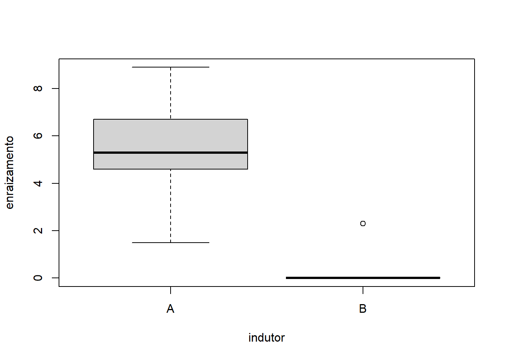
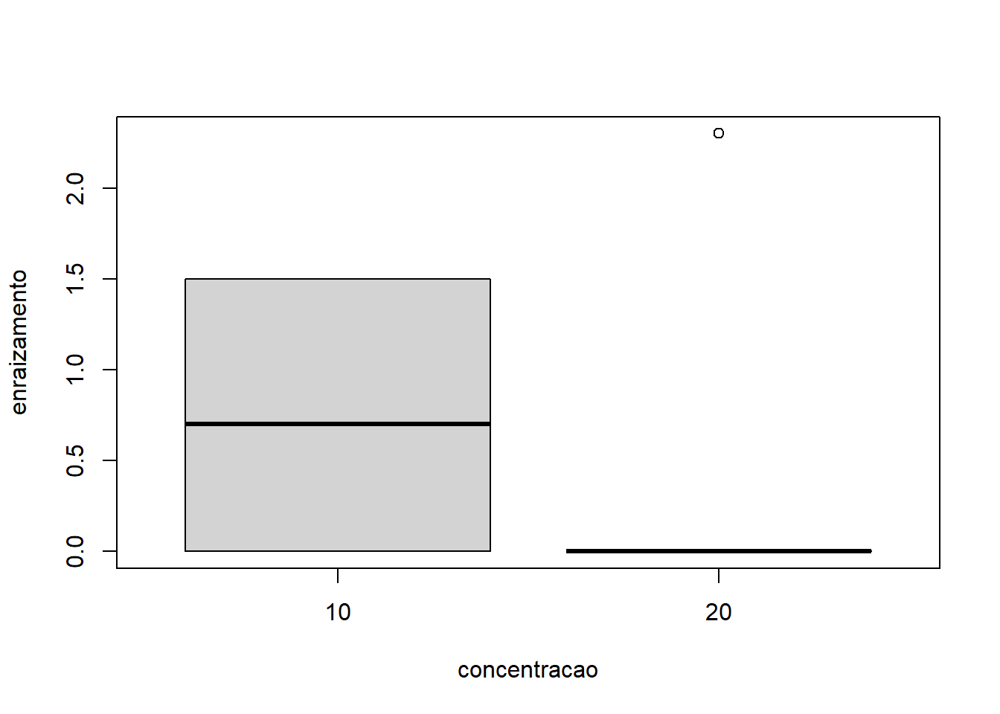

Cap. 9 Fatorial duplo em blocos casualizados
No caso de um fatorial duplo em blocos casualizados, a ANOVA contará com cinco fontes de variação: uma fonte de variação conhecida atribuída ao bloco, outra fonte de variação conhecida determinada pelo tratamento A, outra fonte de variação conhecida determinada pelo tratamento B, outra fonte de variação conhecida determinada pela interação entre os dois tratamentos e uma quinta fonte de variação desconhecida determinada pelo resíduo. O modelo estatístico do delineamento fatorial duplo inteiramente casualizado é:
\[Y = Xmed + BLOCO + TRAT A + TRAT B + (TRAT A * TRAT B) + Erro\]
De forma semelhante ao experimento fatorial inteiramente casualizado, o caso balanceado será analisado através do pacote ExpDes.pt (função fat2.dbc()). Já o caso desbalanceado será analisado pelo pacote easyanova (função ea2() e design=2).
9.1 O caso balanceado
O exemplo balanceado trata de um experimento no qual se avalia a altura de um experimento fatorial combinando cinco doses de um adubo nitrogenado com três espécies de árvores nativas da Mata Atlântica, organizados em 10 blocos:
- Fator 1: Doses de adubos 0, 25, 50, 75 e 100
- Fator 2: Espécies 2, 5 e 7
- 10 blocos
- Variável de interesse: altura das plantas
| dose | especie | bloco | altura |
|---|---|---|---|
| 100 | 2 | 1 | 27.01093 |
| 100 | 2 | 2 | 24.67664 |
| 100 | 2 | 3 | 20.25999 |
| 100 | 2 | 4 | 23.98435 |
| 100 | 2 | 5 | 21.68730 |
| 100 | 2 | 6 | 27.95062 |
| 100 | 2 | 7 | 21.72693 |
| 100 | 2 | 8 | 23.81819 |
| 100 | 2 | 9 | 27.20599 |
| 100 | 2 | 10 | 22.71426 |
| 75 | 2 | 1 | 23.59123 |
| 75 | 2 | 2 | 22.25759 |
| 75 | 2 | 3 | 22.05516 |
| 75 | 2 | 4 | 20.04109 |
| 75 | 2 | 5 | 19.14948 |
| 75 | 2 | 6 | 22.95754 |
| 75 | 2 | 7 | 26.94884 |
| 75 | 2 | 8 | 22.74460 |
| 75 | 2 | 9 | 23.71342 |
| 75 | 2 | 10 | 24.38227 |
| 50 | 2 | 1 | 26.91505 |
| 50 | 2 | 2 | 19.72285 |
| 50 | 2 | 3 | 20.55555 |
| 50 | 2 | 4 | 24.44992 |
| 50 | 2 | 5 | 21.59082 |
| 50 | 2 | 6 | 24.56422 |
| 50 | 2 | 7 | 21.44374 |
| 50 | 2 | 8 | 20.99752 |
| 50 | 2 | 9 | 21.44592 |
| 50 | 2 | 10 | 24.29815 |
| 25 | 2 | 1 | 24.58642 |
| 25 | 2 | 2 | 22.54323 |
| 25 | 2 | 3 | 25.88379 |
| 25 | 2 | 4 | 23.48752 |
| 25 | 2 | 5 | 24.38289 |
| 25 | 2 | 6 | 24.72294 |
| 25 | 2 | 7 | 26.58771 |
| 25 | 2 | 8 | 22.46470 |
| 25 | 2 | 9 | 25.58907 |
| 25 | 2 | 10 | 20.94828 |
| 0 | 2 | 1 | 29.28761 |
| 0 | 2 | 2 | 24.83846 |
| 0 | 2 | 3 | 21.91967 |
| 0 | 2 | 4 | 25.25512 |
| 0 | 2 | 5 | 23.20428 |
| 0 | 2 | 6 | 22.30722 |
| 0 | 2 | 7 | 28.45246 |
| 0 | 2 | 8 | 25.35863 |
| 0 | 2 | 9 | 23.99814 |
| 0 | 2 | 10 | 28.78995 |
| 100 | 5 | 1 | 33.49074 |
| 100 | 5 | 2 | 37.72860 |
| 100 | 5 | 3 | 37.97029 |
| 100 | 5 | 4 | 39.65706 |
| 100 | 5 | 5 | 38.07058 |
| 100 | 5 | 6 | 38.46334 |
| 100 | 5 | 7 | 37.21368 |
| 100 | 5 | 8 | 40.00952 |
| 100 | 5 | 9 | 34.51427 |
| 100 | 5 | 10 | 38.46156 |
| 75 | 5 | 1 | 32.64211 |
| 75 | 5 | 2 | 42.87033 |
| 75 | 5 | 3 | 35.50921 |
| 75 | 5 | 4 | 34.52205 |
| 75 | 5 | 5 | 31.95030 |
| 75 | 5 | 6 | 40.25084 |
| 75 | 5 | 7 | 37.94206 |
| 75 | 5 | 8 | 41.28099 |
| 75 | 5 | 9 | 37.70441 |
| 75 | 5 | 10 | 39.68077 |
| 50 | 5 | 1 | 32.82667 |
| 50 | 5 | 2 | 31.92334 |
| 50 | 5 | 3 | 33.38743 |
| 50 | 5 | 4 | 29.40074 |
| 50 | 5 | 5 | 35.69536 |
| 50 | 5 | 6 | 38.64929 |
| 50 | 5 | 7 | 35.42279 |
| 50 | 5 | 8 | 34.72498 |
| 50 | 5 | 9 | 37.29969 |
| 50 | 5 | 10 | 35.06832 |
| 25 | 5 | 1 | 33.39860 |
| 25 | 5 | 2 | 39.56000 |
| 25 | 5 | 3 | 33.79608 |
| 25 | 5 | 4 | 33.88220 |
| 25 | 5 | 5 | 32.77403 |
| 25 | 5 | 6 | 31.14461 |
| 25 | 5 | 7 | 32.67330 |
| 25 | 5 | 8 | 31.84332 |
| 25 | 5 | 9 | 36.28326 |
| 25 | 5 | 10 | 35.10899 |
| 0 | 5 | 1 | 35.81985 |
| 0 | 5 | 2 | 36.19184 |
| 0 | 5 | 3 | 33.15076 |
| 0 | 5 | 4 | 33.92754 |
| 0 | 5 | 5 | 34.88189 |
| 0 | 5 | 6 | 34.25457 |
| 0 | 5 | 7 | 32.33597 |
| 0 | 5 | 8 | 31.39240 |
| 0 | 5 | 9 | 34.48195 |
| 0 | 5 | 10 | 35.83106 |
| 100 | 7 | 1 | 47.71383 |
| 100 | 7 | 2 | 45.75887 |
| 100 | 7 | 3 | 46.42036 |
| 100 | 7 | 4 | 44.89556 |
| 100 | 7 | 5 | 45.16561 |
| 100 | 7 | 6 | 44.48361 |
| 100 | 7 | 7 | 42.32970 |
| 100 | 7 | 8 | 49.53137 |
| 100 | 7 | 9 | 49.66715 |
| 100 | 7 | 10 | 47.61306 |
| 75 | 7 | 1 | 42.71420 |
| 75 | 7 | 2 | 42.74941 |
| 75 | 7 | 3 | 41.76867 |
| 75 | 7 | 4 | 44.32072 |
| 75 | 7 | 5 | 43.60612 |
| 75 | 7 | 6 | 38.70690 |
| 75 | 7 | 7 | 45.79070 |
| 75 | 7 | 8 | 42.08179 |
| 75 | 7 | 9 | 46.88940 |
| 75 | 7 | 10 | 45.78247 |
| 50 | 7 | 1 | 42.39296 |
| 50 | 7 | 2 | 38.98789 |
| 50 | 7 | 3 | 40.60666 |
| 50 | 7 | 4 | 39.63895 |
| 50 | 7 | 5 | 41.79340 |
| 50 | 7 | 6 | 42.35532 |
| 50 | 7 | 7 | 39.21753 |
| 50 | 7 | 8 | 41.16574 |
| 50 | 7 | 9 | 37.56872 |
| 50 | 7 | 10 | 43.35592 |
| 25 | 7 | 1 | 48.19243 |
| 25 | 7 | 2 | 43.00286 |
| 25 | 7 | 3 | 48.00344 |
| 25 | 7 | 4 | 40.75832 |
| 25 | 7 | 5 | 39.65651 |
| 25 | 7 | 6 | 46.13281 |
| 25 | 7 | 7 | 39.76537 |
| 25 | 7 | 8 | 43.41116 |
| 25 | 7 | 9 | 42.23041 |
| 25 | 7 | 10 | 40.82259 |
| 0 | 7 | 1 | 36.07182 |
| 0 | 7 | 2 | 43.15407 |
| 0 | 7 | 3 | 43.32585 |
| 0 | 7 | 4 | 37.79503 |
| 0 | 7 | 5 | 41.04694 |
| 0 | 7 | 6 | 44.91720 |
| 0 | 7 | 7 | 34.90952 |
| 0 | 7 | 8 | 42.47311 |
| 0 | 7 | 9 | 36.70185 |
| 0 | 7 | 10 | 38.83515 |
O primeiro passo é importar o arquivo csv contendo os resultados do experimento para dentro do R. Esta tarefa pode ser realizada através do seguinte comando:
Para explorar este experimento graficamente, tanto a função boxplot() quanto a função plot() serão usadas. Isto ocorre porque temos um fator quantitativo (doses) e outro fator qualitativos (espécies). Assim, sempre que estivermos analisando o efeito das doses, devemos utilizar gráficos de dispersão. Enquanto que ao analisarmos o efeito dos clones, o boxplot será mais indicado.


# Isolando os níveis do fator 2
# Fixando especie igual a 2
plot(data = fatDBC1[fatDBC1$especie == 2,], altura ~ dose)# Isolando os níveis do fator 1
# Fixando dose igual a 0
boxplot(data = fatDBC1[fatDBC1$dose == 0,], altura ~ especie)Com base nos gráficos apresentados, é razoável acreditar que há um efeito significativo da espécie, mas não não fica muito evidente o efeito significativo da dose, da interação e do bloco. Nota-se que as doses possuem comportamentos diferentes, variando de uma tendência quadrática à uma tendência sigmoidal (cúbica).
Note que quanto mais fatores e interações estiverem presentes em nosso experimento, mais complicado vai ficando a análise gráfica e também a análise estatística. E é por este motivo que desencoraja-se o uso de experimentos fatoriais triplos. Embora os pacotes de análise experimental possuam funções para experimentos fatoriais triplos, não apresentaremos exemplos aqui neste livro. Tente discutir um experimento fatorial triplo com efeito dos fatores, interações duplas e interação tripla significativa!
A análise estatística será feita pela função fat2.dbc() do pacote ExpDes.pt. A sintaxe básica da função pode ser vista acessando a página de ajuda da função:
fat2.dbc(fator1, fator2, bloco, resp, quali = c(TRUE, TRUE),
mcomp = "tukey", fac.names = c("F1", "F2"),
sigT = 0.05, sigF = 0.05)Lembrando que como temos um fator quantitativo e um fator qualitativo, além dos parâmetros obrigatórios, será necessário ajustar o parâmetro quali:
require(ExpDes.pt)
fat2.dbc(fatDBC1$dose, fatDBC1$especie, fatDBC1$bloco,
fatDBC1$altura, quali = c(FALSE, TRUE),
fac.names = c("Dose", "Espécie"))## ------------------------------------------------------------------------
## Legenda:
## FATOR 1: Dose
## FATOR 2: Espécie
## ------------------------------------------------------------------------
##
##
## Quadro da analise de variancia
## ------------------------------------------------------------------------
## GL SQ QM Fc Pr>Fc
## Bloco 9 60.5 6 1.03 0.41738
## Dose 4 212.6 4 8.16 0.00001
## Espécie 2 9138.4 3 702.07 0.00000
## Dose*Espécie 8 224.7 2 4.32 0.00013
## Residuo 126 820.0 5
## Total 149 10456.2 1
## ------------------------------------------------------------------------
## CV = 7.5 %
##
## ------------------------------------------------------------------------
## Teste de normalidade dos residuos (Shapiro-Wilk)
## valor-p: 0.6115979
## De acordo com o teste de Shapiro-Wilk a 5% de significancia, os residuos podem ser considerados normais.
## ------------------------------------------------------------------------
##
##
##
## Interacao significativa: desdobrando a interacao
## ------------------------------------------------------------------------
##
## Desdobrando Dose dentro de cada nivel de Espécie
## ------------------------------------------------------------------------
## ------------------------------------------------------------------------
## Quadro da analise de variancia
## ------------------------------------------------------------------------
## GL SQ QM Fc Pr.Fc
## Bloco 9 60.52166 6.72463 1.0333 0.4174
## Espécie 2 9138.36405 4569.18202 702.069 0
## Dose:Espécie 2 4 50.44803 12.61201 1.9379 0.1082
## Dose:Espécie 5 4 128.29922 32.07481 4.9284 0.001
## Dose:Espécie 7 4 258.52025 64.63006 9.9306 0
## Residuo 126 820.02899 6.50817
## Total 149 10456.18221 70.17572
## ------------------------------------------------------------------------
##
##
##
## Dose dentro do nivel 2 de Espécie
##
## De acordo com o teste F, as medias desse fator sao estatisticamente iguais.
## ------------------------------------------------------------------------
## Niveis Medias
## 1 0 25.34115
## 2 100 24.10352
## 3 25 24.11965
## 4 50 22.59837
## 5 75 22.78412
## ------------------------------------------------------------------------
##
##
## Dose dentro do nivel 5 de Espécie
## ------------------------------------------------------------------------
## Ajuste de modelos polinomiais de regressao
## ------------------------------------------------------------------------
##
## Modelo Linear
## =========================================
## Estimativa Erro.padrao tc valor.p
## -----------------------------------------
## b0 33.5310 0.6249 53.6589 0
## b1 0.0402 0.0102 3.9399 0.0001
## -----------------------------------------
##
## R2 do modelo linear
## --------
## 0.787434
## --------
##
## Analise de variancia do modelo linear
## ========================================================
## GL SQ QM Fc valor.p
## --------------------------------------------------------
## Efeito linear 1 101.0272 101.0272 15.52 0.00013
## Desvios de Regressao 3 27.2720 9.0907 1.4 0.24689
## Residuos 126 820.0290 6.5082
## --------------------------------------------------------
## ------------------------------------------------------------------------
##
## Modelo quadratico
## =========================================
## Estimativa Erro.padrao tc valor.p
## -----------------------------------------
## b0 33.9893 0.7592 44.7679 0
## b1 0.0035 0.0360 0.0984 0.9217
## b2 0.0004 0.0003 1.0628 0.2899
## -----------------------------------------
##
## R2 do modelo quadratico
## --------
## 0.844730
## --------
##
## Analise de variancia do modelo quadratico
## ========================================================
## GL SQ QM Fc valor.p
## --------------------------------------------------------
## Efeito linear 1 101.0272 101.0272 15.52 0.00013
## Efeito quadratico 1 7.3510 7.3510 1.13 0.28991
## Desvios de Regressao 2 19.9210 9.9605 1.53 0.22043
## Residuos 126 820.0290 6.5082
## --------------------------------------------------------
## ------------------------------------------------------------------------
##
## Modelo cubico
## =========================================
## Estimativa Erro.padrao tc valor.p
## -----------------------------------------
## b0 34.3340 0.8010 42.8666 0
## b1 -0.0953 0.0815 -1.1688 0.2447
## b2 0.0031 0.0021 1.5092 0.1337
## b3 -0.00002 0.00001 -1.3510 0.1791
## -----------------------------------------
##
## R2 do modelo cubico
## --------
## 0.937316
## --------
##
## Analise de variancia do modelo cubico
## ========================================================
## GL SQ QM Fc valor.p
## --------------------------------------------------------
## Efeito linear 1 101.0272 101.0272 15.52 0.00013
## Efeito quadratico 1 7.3510 7.3510 1.13 0.28991
## Efeito cubico 1 11.8787 11.8787 1.83 0.17912
## Desvios de Regressao 1 8.0423 8.0423 1.24 0.26841
## Residuos 126 820.0290 6.5082
## --------------------------------------------------------
## ------------------------------------------------------------------------
##
##
## Dose dentro do nivel 7 de Espécie
## ------------------------------------------------------------------------
## Ajuste de modelos polinomiais de regressao
## ------------------------------------------------------------------------
##
## Modelo Linear
## =========================================
## Estimativa Erro.padrao tc valor.p
## -----------------------------------------
## b0 40.1029 0.6249 64.1758 0
## b1 0.0525 0.0102 5.1402 0
## -----------------------------------------
##
## R2 do modelo linear
## --------
## 0.665151
## --------
##
## Analise de variancia do modelo linear
## ========================================================
## GL SQ QM Fc valor.p
## --------------------------------------------------------
## Efeito linear 1 171.9549 171.9549 26.42 0
## Desvios de Regressao 3 86.5653 28.8551 4.43 0.00535
## Residuos 126 820.0290 6.5082
## --------------------------------------------------------
## ------------------------------------------------------------------------
##
## Modelo quadratico
## =========================================
## Estimativa Erro.padrao tc valor.p
## -----------------------------------------
## b0 40.7468 0.7592 53.6682 0
## b1 0.0009 0.0360 0.0263 0.9790
## b2 0.0005 0.0003 1.4930 0.1379
## -----------------------------------------
##
## R2 do modelo quadratico
## --------
## 0.721267
## --------
##
## Analise de variancia do modelo quadratico
## ========================================================
## GL SQ QM Fc valor.p
## --------------------------------------------------------
## Efeito linear 1 171.9549 171.9549 26.42 0
## Efeito quadratico 1 14.5073 14.5073 2.23 0.13793
## Desvios de Regressao 2 72.0581 36.0290 5.54 0.00496
## Residuos 126 820.0290 6.5082
## --------------------------------------------------------
## ------------------------------------------------------------------------
##
## Modelo cubico
## =========================================
## Estimativa Erro.padrao tc valor.p
## -----------------------------------------
## b0 40.1520 0.8010 50.1305 0
## b1 0.1715 0.0815 2.1037 0.0374
## b2 -0.0042 0.0021 -2.0501 0.0424
## b3 0.00003 0.00001 2.3315 0.0213
## -----------------------------------------
##
## R2 do modelo cubico
## --------
## 0.858116
## --------
##
## Analise de variancia do modelo cubico
## ========================================================
## GL SQ QM Fc valor.p
## --------------------------------------------------------
## Efeito linear 1 171.9549 171.9549 26.42 0
## Efeito quadratico 1 14.5073 14.5073 2.23 0.13793
## Efeito cubico 1 35.3782 35.3782 5.44 0.02131
## Desvios de Regressao 1 36.6798 36.6798 5.64 0.01911
## Residuos 126 820.0290 6.5082
## --------------------------------------------------------
## ------------------------------------------------------------------------
##
##
##
## Desdobrando Espécie dentro de cada nivel de Dose
## ------------------------------------------------------------------------
## ------------------------------------------------------------------------
## Quadro da analise de variancia
## ------------------------------------------------------------------------
## GL SQ QM Fc Pr.Fc
## Bloco 9 60.52166 6.72463 1.0333 0.4174
## Dose 4 212.55440 53.13860 8.1649 0
## Espécie:Dose 0 2 1080.11237 540.05619 82.9813 0
## Espécie:Dose 25 2 1820.84094 910.42047 139.8889 0
## Espécie:Dose 50 2 1691.61319 845.80659 129.9608 0
## Espécie:Dose 75 2 2258.11368 1129.05684 173.4831 0
## Espécie:Dose 100 2 2512.39697 1256.19849 193.0188 0
## Residuo 126 820.02899 6.50817
## Total 149 10456.18221 70.17572
## ------------------------------------------------------------------------
##
##
##
## Espécie dentro do nivel 0 de Dose
## ------------------------------------------------------------------------
## Teste de Tukey
## ------------------------------------------------------------------------
## Grupos Tratamentos Medias
## a 7 39.92305
## b 5 34.22678
## c 2 25.34115
## ------------------------------------------------------------------------
##
##
## Espécie dentro do nivel 25 de Dose
## ------------------------------------------------------------------------
## Teste de Tukey
## ------------------------------------------------------------------------
## Grupos Tratamentos Medias
## a 7 43.19759
## b 5 34.04644
## c 2 24.11965
## ------------------------------------------------------------------------
##
##
## Espécie dentro do nivel 50 de Dose
## ------------------------------------------------------------------------
## Teste de Tukey
## ------------------------------------------------------------------------
## Grupos Tratamentos Medias
## a 7 40.70831
## b 5 34.43986
## c 2 22.59837
## ------------------------------------------------------------------------
##
##
## Espécie dentro do nivel 75 de Dose
## ------------------------------------------------------------------------
## Teste de Tukey
## ------------------------------------------------------------------------
## Grupos Tratamentos Medias
## a 7 43.44104
## b 5 37.43531
## c 2 22.78412
## ------------------------------------------------------------------------
##
##
## Espécie dentro do nivel 100 de Dose
## ------------------------------------------------------------------------
## Teste de Tukey
## ------------------------------------------------------------------------
## Grupos Tratamentos Medias
## a 7 46.35791
## b 5 37.55796
## c 2 24.10352
## ------------------------------------------------------------------------Uma vez que os dados apresentaram normalidade, o modelo estatístico escolhido é adequado e a ANOVA pode ser então considerada. Com exceção do efeito do bloco, todos apresentaram alta significância, incluindo a interação. Desta forma, os efeitos devem ser analisados em conjunto através do desdobramento. O pacote ExpDes.pt já realiza para você.
Fique atento! Não esqueça de definir na função se os fatores são qualitativos ou quantitativos. Como vimos anteriormente, experimentos qualitativos são desdobrados com teste de médias dentro fixando um dos fatores, enquanto que fatores quantitativos são desdobrados através da análise de regressão fixando um dos fatores.
9.2 O caso desbalanceado
O exemplo desbalanceado trata de um experimento no qual se avalia a influência da intensidade do combate contra um determinado inseto na produção de sementes em duas espécies arbóreas, organizadas em 10 blocos:
- Fator 1: Percentuais de combate 100, 50 e 0
- Fator 2: Espécies 2 e 5
- 10 blocos
- Observação perdida: bloco 8 do combate 100 e espécie 2
- Variável de interesse: peso de sementes produzidas em quilos
| combate | especie | bloco | peso |
|---|---|---|---|
| 100 | 2 | 1 | 21.6 |
| 100 | 2 | 2 | 23.6 |
| 100 | 2 | 3 | 27.6 |
| 100 | 2 | 4 | 22.3 |
| 100 | 2 | 5 | 24.1 |
| 100 | 2 | 6 | 19.9 |
| 100 | 2 | 7 | 22.7 |
| 100 | 2 | 9 | 23.3 |
| 100 | 2 | 10 | 22.6 |
| 50 | 2 | 1 | 22.5 |
| 50 | 2 | 2 | 22.8 |
| 50 | 2 | 3 | 21.8 |
| 50 | 2 | 4 | 25.8 |
| 50 | 2 | 5 | 21.8 |
| 50 | 2 | 6 | 24.0 |
| 50 | 2 | 7 | 19.2 |
| 50 | 2 | 8 | 20.3 |
| 50 | 2 | 9 | 21.0 |
| 50 | 2 | 10 | 21.0 |
| 0 | 2 | 1 | 30.0 |
| 0 | 2 | 2 | 25.8 |
| 0 | 2 | 3 | 27.8 |
| 0 | 2 | 4 | 26.1 |
| 0 | 2 | 5 | 28.9 |
| 0 | 2 | 6 | 34.1 |
| 0 | 2 | 7 | 23.9 |
| 0 | 2 | 8 | 29.5 |
| 0 | 2 | 9 | 21.4 |
| 0 | 2 | 10 | 30.5 |
| 100 | 5 | 1 | 36.0 |
| 100 | 5 | 2 | 40.5 |
| 100 | 5 | 3 | 37.5 |
| 100 | 5 | 4 | 33.0 |
| 100 | 5 | 5 | 38.3 |
| 100 | 5 | 6 | 37.5 |
| 100 | 5 | 7 | 37.5 |
| 100 | 5 | 8 | 39.0 |
| 100 | 5 | 9 | 36.0 |
| 100 | 5 | 10 | 40.5 |
| 50 | 5 | 1 | 32.8 |
| 50 | 5 | 2 | 35.7 |
| 50 | 5 | 3 | 32.4 |
| 50 | 5 | 4 | 37.5 |
| 50 | 5 | 5 | 35.9 |
| 50 | 5 | 6 | 34.2 |
| 50 | 5 | 7 | 40.5 |
| 50 | 5 | 8 | 33.2 |
| 50 | 5 | 9 | 27.5 |
| 50 | 5 | 10 | 32.9 |
| 0 | 5 | 1 | 34.5 |
| 0 | 5 | 2 | 33.0 |
| 0 | 5 | 3 | 37.5 |
| 0 | 5 | 4 | 37.5 |
| 0 | 5 | 5 | 34.5 |
| 0 | 5 | 6 | 28.5 |
| 0 | 5 | 7 | 30.0 |
| 0 | 5 | 8 | 34.5 |
| 0 | 5 | 9 | 34.5 |
| 0 | 5 | 10 | 46.5 |
O primeiro passo é importar o arquivo csv contendo os resultados do experimento para dentro do R. Esta tarefa pode ser realizada através do seguinte comando:
Assim como no experimento balanceado, os dados devem ser explorados graficamente. Diversas opções podem ser utilizadas a partir do pacote gráfico básico. Veja alguns exemplos e tente tirar sua próprias conclusões sobre a análise do experimento que será feita logo em seguida:

# Isolando os níveis do fator 2
# Fixando especie igual a 2
plot(data = fatDBC2[fatDBC2$especie == 2,], peso ~ combate)# Isolando os níveis do fator 1
# Fixando combate igual a 0
boxplot(data = fatDBC2[fatDBC2$combate == 0,], peso ~ especie)Como o delineamento fatorial duplo em blocos casualizados pode ter a interação significativa, é fundamental considerar a análise através da ANOVA tipo III. A sintaxe da função é:
Como já mencionado, o pacote easyanova exige que os dados sejam apresentados em forma de dataframe contendo apenas as colunas relevantes para a análise. No caso de um experimento fatorial duplo em blocos casualizados, a ordem esperada das colunas é:
- Fator A
- Fator B
- Bloco
- Variável resposta
Qualquer variável extra deve ser removida dos dados e a ordem acima deve ser respeitada para o correto uso do pacote. Além de apresentar os dados na estrutura correta, o parâmetro design deve ser ajustado para 2, indicando fatorial duplo em blocos casualizados.

Os resultados são armazenados numa lista de 10 posições, aqui salva numa variável denominada de r.aov. As 10 posições contém:
- Análise de variância
- Comparação de médias do fator 1
- Teste de comparação múltipla do fator 1
- Comparação de médias do fator 2
- Teste de comparação múltipla do fator 2
- Comparação de médias do fator 1 dentro dos níveis do fator 2
- Teste de comparação múltipla do fator 1 dentro dos níveis do fator 2
- Comparação de médias do fator 2 dentro dos níveis do fator 1
- Teste de comparação múltipla do fator 2 dentro dos níveis do fator 1
- Análise das pressuposições
Nota-se que o teste de Shapiro-Wilk não é significativo, aceitando-se portanto o teste de nulidade: os resíduos são normais.
## $`Residual analysis`
## $`Residual analysis`$`residual analysis`
## values
## p.value Shapiro-Wilk test 0.0847
## p.value Bartlett test (factor_1) 0.0888
## p.value Bartlett test (factor_2) 0.1543
## p.value Bartlett test (treatments) 0.2051
## coefficient of variation (%) 10.8100
## first value most discrepant 59.0000
## second value most discrepant 46.0000
## third value most discrepant 25.0000
##
## $`Residual analysis`$residuals
## 1 2 3 4 5 6
## -1.0666667 0.2666667 3.7333333 -1.1666667 0.4166667 -2.9000000
## 7 8 9 10 11 12
## 0.6333333 2.9166667 -2.8333333 0.8853333 0.5186667 -1.0146667
## 13 14 15 16 17 18
## 3.3853333 -0.8313333 2.2520000 -1.8146667 -1.6680000 1.6686667
## 19 20 21 22 23 24
## -3.3813333 2.6053333 -2.2613333 -0.7946667 -2.0946667 0.4886667
## 25 26 27 28 29 30
## 6.5720000 -2.8946667 1.7520000 -3.7113333 0.3386667 -1.1746667
## 31 32 33 34 35 36
## 2.6586667 -0.8746667 -4.9746667 0.1086667 0.1920000 0.9253333
## 37 38 39 40 41 42
## 1.4720000 1.1086667 0.5586667 -1.0546667 1.1786667 -2.6546667
## 43 44 45 46 47 48
## 2.8453333 1.0286667 0.2120000 7.2453333 -1.0080000 -4.0713333
## 49 50 51 52 53 54
## -3.7213333 -0.1946667 -2.3613333 1.6053333 2.0053333 -1.2113333
## 55 56 57 58 59
## -6.3280000 -4.0946667 -0.5480000 2.0886667 9.0386667
##
## $`Residual analysis`$`standardized residuals`
## 1 2 3 4 5
## -0.37654793 0.09413698 1.31791775 -0.41184930 0.14708903
## 6 7 8 9 10
## -1.02373968 0.22357533 1.02962324 -1.00020543 0.31253478
## 11 12 13 14 15
## 0.18309643 -0.35819122 1.19506899 -0.29347204 0.79498681
## 16 17 18 19 20
## -0.64060216 -0.58882682 0.58906216 -1.19365693 0.91971831
## 21 22 23 24 25
## -0.79828161 -0.28052821 -0.73944599 0.17250602 2.32000592
## 26 27 28 29 30
## -1.02185694 0.61847997 -1.31015145 0.11955397 -0.41467341
## 31 32 33 34 35
## 0.93854571 -0.30876930 -1.75612540 0.03836082 0.06777863
## 36 37 38 39 40
## 0.32665533 0.51963614 0.39137450 0.19721698 -0.37231176
## 41 42 43 44 45
## 0.41608546 -0.93713365 1.00444160 0.36313341 0.07483890
## 46 47 48 49 50
## 2.55770180 -0.35583779 -1.43723637 -1.31368158 -0.06872000
## 51 52 53 54 55
## -0.83358297 0.56670463 0.70791010 -0.42761724 -2.23387058
## 56 57 58 59
## -1.44547336 -0.19345150 0.73732791 3.19077300O quadro geral da ANOVA indica que os dois fatores, bem como a interação são significativos:
## $`Analysis of variance`
## df type III SS mean square F value p>F
## factor_1 2 113.1605 56.5803 5.349 0.0083
## factor_2 1 1890.1081 1890.1081 178.6876 <0.001
## blocks 9 91.7117 10.1902 0.9634 0.4825
## factor_1:factor_2 2 132.6536 66.3268 6.2704 0.004
## residuals 44 465.4199 10.5777 - -Parte-se direto, portanto, para a análise dos respectivos desdobramentos presentes nas posições 6 e 8 da lista de resultados (r.aov[6] e r.aov[8]):
## $`Adjusted means (factor 1 in levels of factor 2)`
## $`Adjusted means (factor 1 in levels of factor 2)`$`factor_1 in 2`
## treatment adjusted.mean standard.error tukey snk duncan t
## 1 0.2 27.800 1.0285 a a a a
## 3 100.2 23.072 1.0285 b b b b
## 2 50.2 22.020 1.0285 b b b b
## scott_knott
## 1 a
## 3 b
## 2 b
##
## $`Adjusted means (factor 1 in levels of factor 2)`$`factor_1 in 5`
## treatment adjusted.mean standard.error tukey snk duncan t
## 6 100.5 37.58 1.0285 a a a a
## 4 0.5 35.10 1.0285 a a ab ab
## 5 50.5 34.26 1.0285 a a b b
## scott_knott
## 6 a
## 4 a
## 5 a## $`Adjusted means (factor 2 in levels of factor 1)`
## $`Adjusted means (factor 2 in levels of factor 1)`$`factor_2 in 0`
## treatment adjusted.mean standard.error tukey snk duncan t
## 4 0.5 35.1 1.0285 a a a a
## 1 0.2 27.8 1.0285 b b b b
## scott_knott
## 4 a
## 1 b
##
## $`Adjusted means (factor 2 in levels of factor 1)`$`factor_2 in 50`
## treatment adjusted.mean standard.error tukey snk duncan t
## 5 50.5 34.26 1.0285 a a a a
## 2 50.2 22.02 1.0285 b b b b
## scott_knott
## 5 a
## 2 b
##
## $`Adjusted means (factor 2 in levels of factor 1)`$`factor_2 in 100`
## treatment adjusted.mean standard.error tukey snk duncan t
## 6 100.5 37.580 1.0285 a a a a
## 3 100.2 23.072 1.0285 b b b b
## scott_knott
## 6 a
## 3 bFique atento! O pacote easyanova não diferencia fatores qualitativos e quantitativos, analisando todos os fatores e seus desdobramentos com teste comparativo de média.